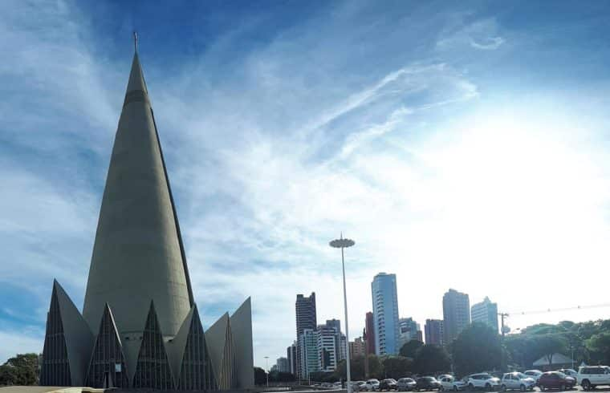

| Home |

Foto Catedral Basílica Menor Nossa Senhora da Glória.
A Catedral Basílica de Maringá é a mais alta catedral da América Latina.
Foi inspirada e idealizada na era dos "Sputniks" (a palavra "poustinikki"]
designa o peregrino que se afasta do mundo para ficar mais perto de Deus).
Sua arquitetura é moderna e arrojada, foi idealizada por Dom Jaime Luiz Coelho
e projetada pelo arquiteto José Augusto Bellucci. É o 25º monumento religioso
em altura no mundo e o primeiro na América do Sul. De forma cônica, possui um
diâmetro de 50 metros e uma nave única, circular, com diâmetro interno de 38 metros.
O cone possui uma altura externa de 114 metros, sustentando uma cruz de 10 metros,
perfazendo um total de 124 metros de altura. Sua capacidade é de 3.500 pessoas,
que podem ser distribuídas em duas galerias internas superpostas.
A porta principal está voltada para o norte; a Capela do Santíssimo para o sol
nascente e a do Batistério para o poente. Ao sul a grande porta que leva a cripta,
onde serão sepultados os Bispos, e que está sob o altar mor. No interior dos dois
cones a 45 metros de altura, encontra-se o ossário, com 1.360 lóculos, que os
fiéis adquirem para guardar os restos mortais de seus entes queridos.
Sua pedra fundamental, um pedaço de mármore retirado das escavações da Basílica
de São Pedro pelo Papa Pio XII, foi lançada em 15 de agosto de 1958 em cerimônia
promovida pelo Bispo Diocesano, Dom Jaime Luiz Coelho, e presidida pelo então
Arcebispo de Curitiba, dom Manuel da Silveira D'Elboux. A Catedral, dedicada a
Nossa Senhora da Glória, foi construída no período de julho de 1959 a maio de 1972.
Sua obras em concreto foram concluídas quase quatorze anos depois, em 10 de maio de 1972,
oincidindo com o aniversário de 25 anos do município de Maringá. A Catedral foi então
consagrada no dia 3 de maio de 1981. Em 21 de janeiro de 1982 recebeu o título de Catedral Basílica Menor.